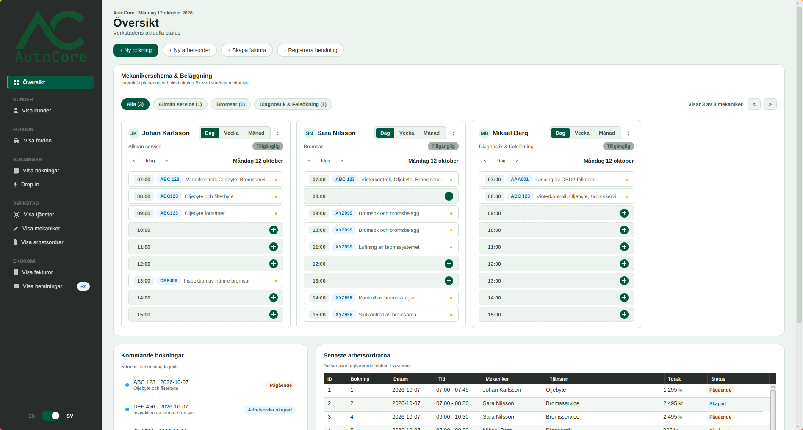
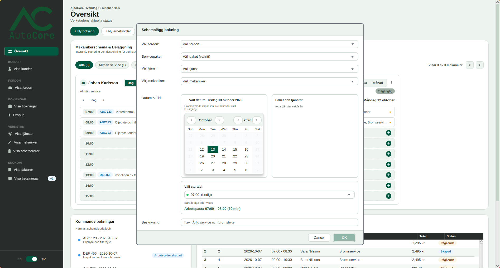

Kunder & fordon
Kunder, deras fordon och servicehistoriken i samma vy.
Verkstadssystem för Wigell Group
AutoCore håller koll på kunder, fordon, bokningar, arbetsordrar och fakturor. Allt ligger i en lokal SQLite-databas, och gränssnittet är byggt i JavaFX.

En arbetsyta
Varje del hänger ihop med nästa, från första bokningen till betald faktura.
Kunder, deras fordon och servicehistoriken i samma vy.
Mekaniker, tjänster och tider utan överlapp eller dubbelbokningar.
Drop-in, standard och reklamation, med statusbyten som systemet spärrar.
Fakturarader med rabatt och moms. Betalning via kort, Swish eller kontant.

Systemet i korthet
Gränssnittet pratar med GarageSystem, som pratar med serviceklasserna, som pratar med repositoryt. Ingen genväg förbi.
Öppen källkod
README:n visar hur du bygger med JDK 25 och Maven och kör appen lokalt.